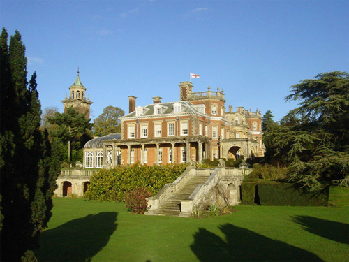
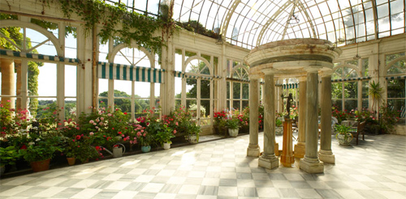
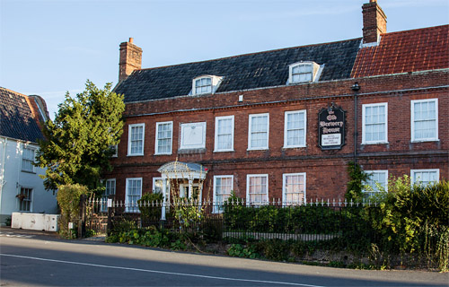
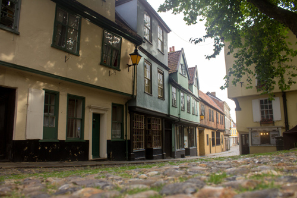
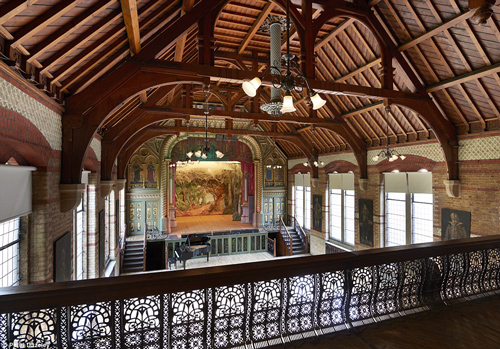

Sennowe Park, Norfolk portrays 'Marsdon Manor'.

The Conservatory at Sennowe Park.

The Old Brewery House portrays 'The Red Anchor'.

'The Village' is Reepham in Norfolk.

The Normanfield Theatre at Teddington is the setting for the Civil Defence Meeting. (Also used in 'The Case of the Missing Will' and 'After the Funeral').